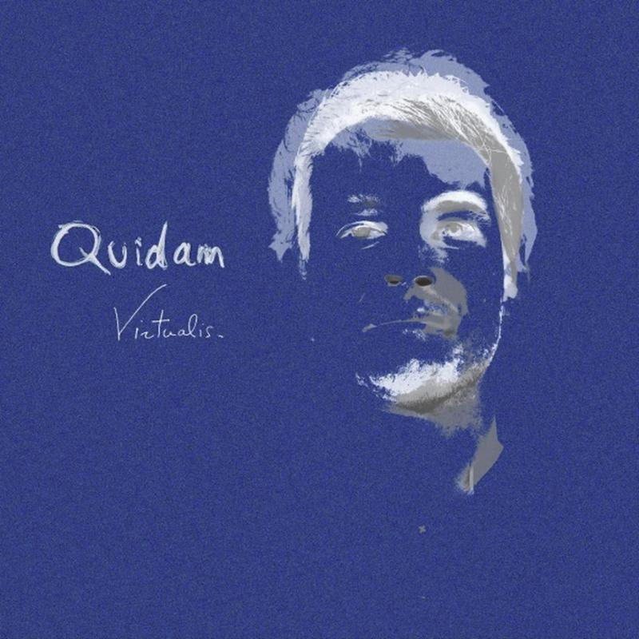

Quidam — Virtualis
Album · made in 2018–2019 · released 21 June 2019 · 12 tracks, 44 min
A collective album that brought together eight to ten artists: producers, musicians, beatmakers, a graphic designer, a designer, an illustrator and a mixing engineer.
- Art direction
- Production
- Composition
My role
Concept, direction and production of the album. Co-writer of all twelve tracks.
Tracks
- Soundscape 2:06
- Time of Waves 4:14
- Celsius 3:49
- Fahrenheit 5:49
- Kind of Madness 4:08
- Bisolar 3:32
- Drömfångare 3:06
- Pachala 2:43
- Byte Me 3:09
- Toucan Toco 3:14
- Follose 2:57
- Majini 5:25
Credits
Music: Thomas Dechaud-Fauchet, with Victor Demoëte, Nicolas Hemon, Alexandre Ténèze, Dolé Panada, Romain Darracq, Jean-Marie Renucci and Théo Albaric.
Lyrics: Alexandre Ténèze (Fahrenheit), Dolé Panada (Kind of Madness).
[TO COMPLETE: mixing, graphic design, design, illustration, cover artist]
Label: [TO COMPLETE: iM Electronica or Quidam-Records]
Listen

Deezer · [TO COMPLETE: Spotify, Apple Music, Bandcamp]